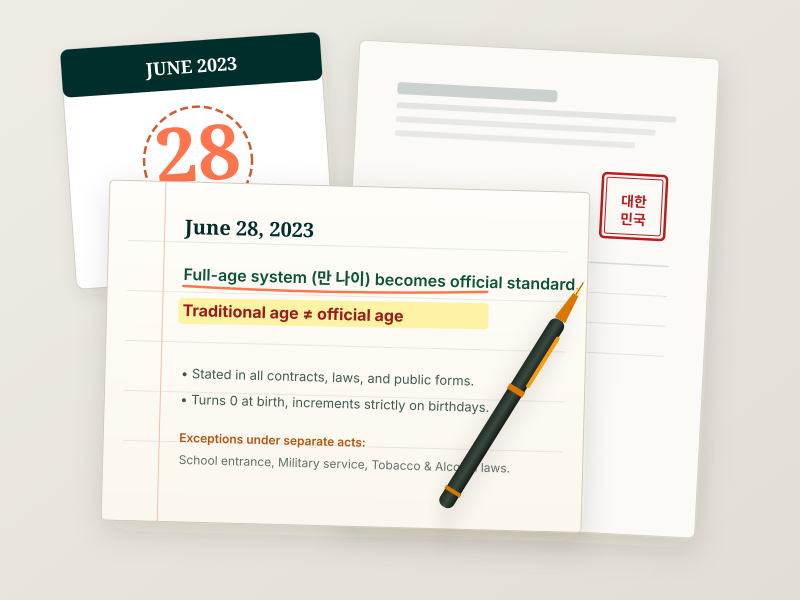
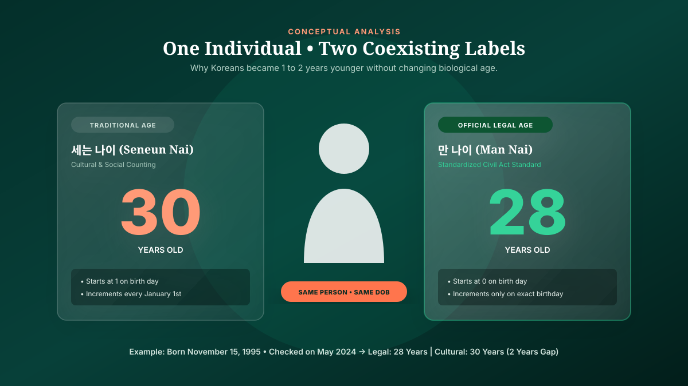

Did Korea Get Rid of Korean Age?
South Korea standardized full-age counting for official, legal, administrative, and contractual purposes on June 28, 2023. Under the revised Civil Act, a person’s legal age begins at zero on the day they are born and increases by one year on each subsequent birthday. The traditional counting method—where a person is one year old at birth and gains a year every January 1st—is no longer recognized on government forms, medical records, or legal contracts, but it continues to exist informally in everyday cultural interaction.
What Changed in Korea’s Age System in 2023?
For decades, South Korea operated with three separate age-calculation standards functioning simultaneously across public life, law, and social customs. This fragmentation created substantial friction in statutory compliance, government administration, and international commerce.
The Ministry of Government Legislation (MOLEG) classified the June 28, 2023 reform into three clear structural layers:
- Before June 28, 2023: Three distinct counting systems coexisted. Citizens used traditional Korean age (세는 나이) in daily conversation, calendar year age (연 나이) in specific recruitment and juvenile statutes, and full age (만 나이) in court proceedings and medical dosing.
- The June 28, 2023 Enactment: The National Assembly’s amendments to the Civil Act (Articles 158–161) and the General Act on Public Administration (Article 7-2) took effect. These amendments explicitly mandated that unless an explicit statutory exception exists, any age referenced in a South Korean law, administrative document, or private legal agreement is legally presumed to be Full Age (만 나이 - Man Nai).
- After the Reform: Government agencies, hospitals, banks, corporate employers, and utility providers transitioned their forms and customer databases to full calendar age. When a Korean passport or civil registry record states an age, it matches the international birthday-based standard.
Korea Had Three Ways of Counting Age
To understand why the 2023 change occurred, one must recognize the three distinct mathematical mechanisms that historically operated alongside one another. The official government portal Korea.net explicitly details these three frameworks:
For a step-by-step mathematical demonstration of each formula, consult our detailed tutorial on how to calculate Korean age and our comparative guide on Korean age vs international age.
Why Did South Korea Change Its Age System?
Media narratives often framed the reform as an aesthetic desire for citizens to "feel younger." In reality, the Republic of Korea’s official legislative records document concrete administrative, legal, and financial catalysts:
- Eliminating Legal Ambiguities in Contracts: Prior to 2023, standard commercial insurance policies and pension contracts frequently used ambiguous terms like "eligible at age 60." When disputes reached appellate courts, insurers argued for international full age while policyholders claimed traditional age. Standardizing the Civil Act established an ironclad legal baseline.
- Administrative Clarity Across Public Services: Government public health guidelines—most notably during vaccination campaigns and pharmaceutical dosage rollouts—suffered public confusion when citizens misjudged eligibility thresholds between birth-month milestones and calendar-year groups.
- International Compatibility: As South Korea’s global footprint expanded across business, education, immigration, and cultural exports, explaining why a Korean professional had two different ages created needless friction in visa applications, employment contracts, and academic transfers.

Is Korean Age Still Used?
The most common misconception among international observers is that traditional Korean age vanished overnight. It did not. Laws govern state power, contracts, and courts; they do not dictate the informal linguistic architecture of private life.
Understanding the current landscape requires separating three distinct spheres of Korean society:
- Official & Legal Contexts (100% Full Age): Tax filings, passport expiration dates, voting rights, medical prescriptions, employment contracts, and court judgments now exclusively recognize 만 나이 (full age). Using traditional age on an official document is legally void.
- Cultural & Social Relationships (Coexisting Usage): The Korean language possesses an intricate hierarchy of speech levels, honorifics (존댓말), and informal titles such as Hyeong (older brother), Oppa, Noona, and Unnie. Because these interpersonal dynamics depend on birth cohort, many Koreans still ask for birth year (몇 년생이세요?) or traditional age to immediately establish social parity or seniority.
- Entertainment & Media: Variety television shows, K-pop idol profiles, and web dramas often mention both numbers for clarity, frequently joking about idols enjoying their "reclaimed youth" under the new law.
What Did NOT Change? Statutory Exceptions in the 2023 Reform
Did everything in South Korea switch to full age on June 28, 2023? No. The Ministry of Government Legislation expressly preserved separate age rules across several key statutes to maintain administrative continuity.
These exceptions primarily utilize Year Age (연 나이 - Yeon Nai), which groups all individuals born within the same calendar year together regardless of their individual birthday.
| Public Sector / Regulated Area | Age Standard Used | Governing Statute & Rationale |
|---|---|---|
| Legal Documents & Contracts | Full Age (만 나이) | Civil Act Articles 158–161; General Act on Public Administration. Mandatory standard. |
| Medical & Healthcare Dosing | Full Age (만 나이) | Pharmaceutical and clinical safety depends on exact chronological development from birth. |
| Elementary School Entrance | Year Age (연 나이 6) | Elementary and Secondary Education Act: Children enter school on March 1 of the year they turn full age 6, grouping whole birth years together. |
| Military Conscription Draft | Year Age (연 나이 19) | Military Service Act: Draft physical examinations and enlistment eligibility are batched by calendar birth year (Jan 1 of the year turning 19). |
| Tobacco & Alcohol Purchases | Year Age (연 나이 19) | Juvenile Protection Act: Individuals may legally purchase alcohol and tobacco starting January 1st of the calendar year they turn 19, avoiding mid-year commercial verification. |
| Civil Service Examinations | Year Age Standard | State Public Officials Act: Exam eligibility is structured by birth year cohorts to prevent administrative bias based on birth months. |
| Commercial Insurance Age | Insurance Age (상령일) | Actuarial standard: Rounds up or down based on whether 6 months have passed since the most recent birthday. |
*Source: Government Implementation Guidelines for the Unified Age System, Ministry of Government Legislation (MOLEG), June 2023.
Are You Checking an Age in South Korea?
Follow this decision path to determine which age standard applies to your situation.
Why Did Koreans Suddenly Become 1 or 2 Years Younger?
When international headlines proclaimed that South Koreans had suddenly become one or two years younger, readers questioned whether time had literally shifted. In reality, what changed was simply the measurement label applied to a person's life span.
Under traditional Korean age (세는 나이), two primary factors inflated the stated numerical value:
- You were counted as 1 year old on the day you were born, reflecting the cultural recognition of embryonic gestation.
- You gained another year on every January 1st, rather than on your individual birthday.
Consequently, an individual's traditional age was always at least one year higher than their full international age. Furthermore, during the calendar window between January 1st and their actual birthday, their traditional age was two years higher.
When the government standardized full age, citizens simply aligned their official number with international standards. A person born on December 31, 1995 was traditionally 30 years old on January 1, 2024—yet their legal full age remained 28 until the final day of the year.

The Legislative Timeline (2022 → 2023)
The transition from a multi-system status quo to a unified statutory standard required legislative debate and coordinated public awareness campaigns led by the Ministry of Government Legislation:
Presidential Election Campaign Pledge
Unifying the national age system was introduced as a key presidential governance objective to resolve administrative disputes and reduce economic transaction costs.
National Assembly Passes Statutory Amendments
The South Korean National Assembly plenary session approved statutory amendments to both the Civil Act and the General Act on Public Administration, mandating the full-age system.
Government Implementation Briefing
The Ministry of Government Legislation held an official national press briefing outlining educational materials, exception guidelines, and civil service alignment strategies.
Official Law Enactment Nationwide
The unified full-age standard formally took effect across all public administrative bodies, regional municipal portals, banking institutions, and private contractual frameworks.
Want to Compare the Two Age Systems?
Enter your birth date to instantly compute your standardized full age, traditional Korean age, and Year Age side by side with live cultural milestones.
Frequently Asked Questions
Authoritative answers to the most frequent queries regarding the 2023 Korean age change, legal definitions, and cultural conventions:
Explore the Korean Age Knowledge Base
Deepen your understanding of East Asian chronology, historical arithmetic, and cultural conventions across our dedicated guides:
- 1. What is Korean Age? How the traditional Korean age system worked, cultural origins, and East Asian reckoning.
- 2. How to Calculate Korean Age Exact mathematical formulas, birthday benchmarks, and worked milestone examples.
- 3. Korean Age vs International Age Detailed comparative analysis explaining why Korean age can be 1 or 2 years higher.
- 4. Korean Age Calculator (Utility) Compute your official legal age, cultural age, and K-pop idol milestones side by side.
- 5. How Old Am I in Korean Age? Calculate your exact Korean age, view the age difference meter, and check milestone years.
- 6. How to Say Your Age in Korean Master native Korean counting numbers, counters (살 vs 나이), and conversational etiquette.